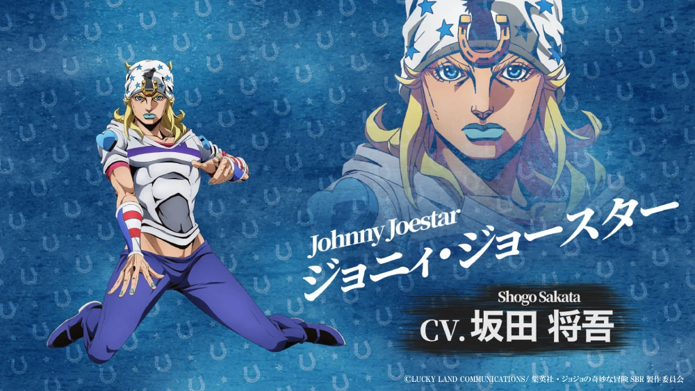
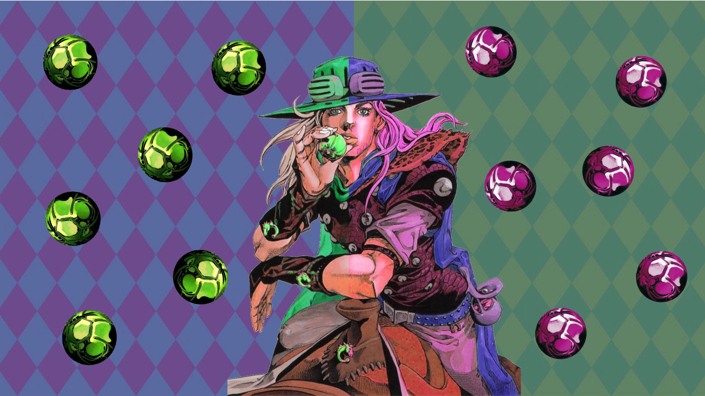
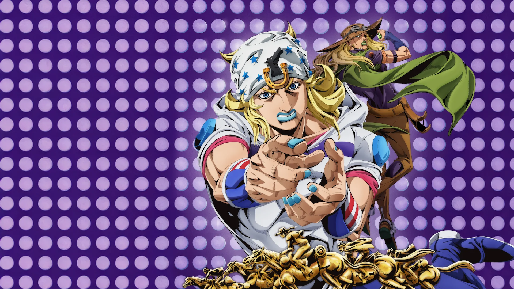
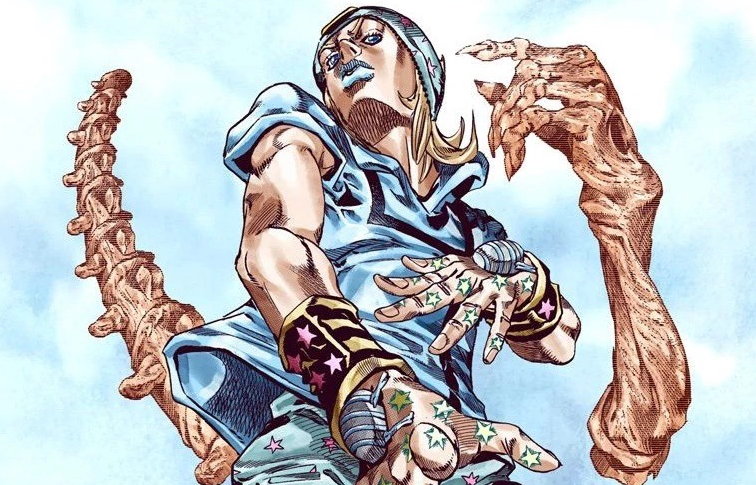
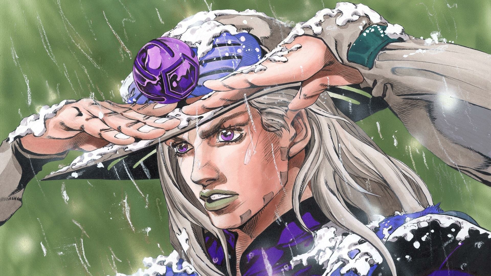
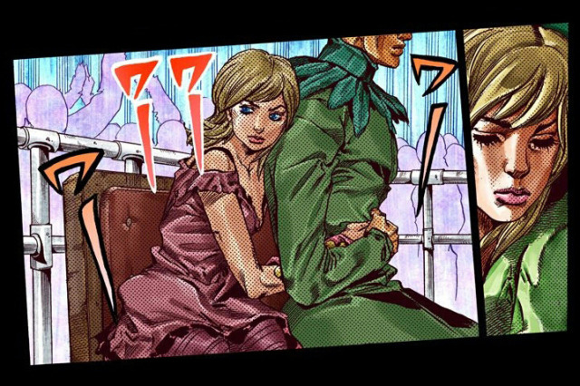

Steel Ball Run Arc
The most epic race across America begins!

Johnny Joestar
The protagonist with the power of Spin.

Gyro Zeppeli
Master of the Spin technique.
The most epic race across America begins!

The protagonist with the power of Spin.

Master of the Spin technique.
Welcome to the ultimate JoJo's Bizarre Adventure fan site! Discover everything about the legendary series, from the iconic Stands to the most memorable moments. Join us as we celebrate the bizarre adventures of the Joestar family across generations. Yare yare daze!
On March 19, 2026, the first episode of the Steel Ball Run anime adaptation aired, and it was absolutely spectacular! The animation quality exceeded all expectations, with stunning visuals that brought Johnny Joestar's journey to life. The Spin technique was animated with breathtaking fluidity, and the opening race sequence left fans speechless. This is the Arc that changed everything!
Steel Ball Run is set in 1890 and follows a deadly 6,000-kilometer horse race across the United States. What appears to be a simple race is actually a cover for a much darker conspiracy: the collection of the Saint's Corpse — the mummified remains of Jesus Christ scattered across America. These parts grant incredible powers (including the Spin technique) and the race is secretly orchestrated to gather them for a greater purpose. The stakes are life-and-death, with Stand users, assassins, and even the President of the United States involved.

Johnny Joestar is one of the most compelling JoJo protagonists, beginning his journey as a broken former jockey and evolving into a determined fighter. Through the Steel Ball Run race, his growth, resolve, and mastery of Spin make his story one of redemption and ambition.
Born into a wealthy family in Kentucky, Johnny was a child prodigy jockey. His older brother Nicholas died in a tragic horse-riding accident when Johnny was young — the horse tripped, throwing Nicholas into a river where he drowned. Their father George blamed Johnny harshly, claiming the boy was jealous and responsible for the tragedy. This guilt and family rejection shattered Johnny. He trained relentlessly to become the greatest jockey, winning the Kentucky Derby and Triple Crown, but shortly afterward he was mysteriously shot in the spine (the shooter was never officially identified at the time) and left permanently paralyzed from the waist down. The Steel Ball Run becomes his chance at redemption: he discovers the Spin technique and awakens his Stand Tusk, turning his despair into unstoppable determination.

Gyro Zeppeli is charismatic, skilled, and unforgettable. As Johnny's mentor and partner, his use of the Spin and his unique philosophy make him a fan favorite. His humor, loyalty, and combat style give Steel Ball Run much of its heart and energy.
Gyro comes from the prestigious Zeppeli family of Naples (a kingdom in this alternate 1890s world), legendary executioners who have mastered the "Spin" — a superhuman technique that manipulates rotational energy. Sent to America on a secret mission by his father, Gyro enters the Steel Ball Run race to deliver a message and protect the Saint's Corpse. His Stand, Scan, and later Ball Breaker, combined with his steel balls and golden rectangle philosophy ("the perfect ratio"), make him one of the most powerful and entertaining characters in the series. His friendship with Johnny is the emotional core of the story.

Funny Valentine stands out as one of JoJo's most iconic antagonists. With a strong ideology and overwhelming power, he becomes a central force in Steel Ball Run. His presence raises the stakes and creates some of the most intense conflicts in the arc.
The 23rd President of the United States, Funny Valentine is a ruthless patriot who believes America must become the greatest nation in the world — no matter the cost. His Stand, Dirty Deeds Done Dirt Cheap (D4C), allows him to travel between parallel dimensions and even swap bodies with his alternate selves. He is secretly behind the Steel Ball Run race, using it to collect all 9 parts of the Saint's Corpse so he can grant infinite "blessings" to the USA. His calm, polite demeanor hides a terrifying willingness to sacrifice anyone (including his own soldiers and citizens) for his vision of American Exceptionalism. One of the most complex and philosophical villains in the entire JoJo series.

Steven Steel and Lucy Steel play a crucial role in the Steel Ball Run story. Steven's leadership and Lucy's courage help shape key moments of the plot. Their determination and sacrifice add emotional depth to the race and the larger conflict.
Steven Steel is the multi-millionaire organizer and official president of the Steel Ball Run race. He is a kind yet ambitious man who genuinely wants the race to succeed and bring glory to America. However, the most talked-about aspect of his character is his marriage to Lucy Steel. Lucy is only 14 years old when the story begins — a fact that has generated massive controversy among fans worldwide. The huge age gap (Steven is in his mid-30s) and the fact that a minor is depicted in a marital relationship with an adult has been heavily criticized as problematic, uncomfortable, and reflective of some of Hirohiko Araki's more controversial writing choices from the early 2000s. Many modern readers call it "creepy" or outright unacceptable by today's standards, sparking endless debates on forums, Reddit, and social media about age-gap tropes in manga/anime.
Despite the controversy, Lucy is one of the strongest and bravest female characters in Steel Ball Run. Originally from a poor family, she married Steven (partly for protection and status) and quickly becomes entangled in the deadly conspiracy surrounding the Saint's Corpse. She shows incredible intelligence, loyalty, and courage — even developing her own Stand later in the story. Her arc is full of sacrifice, pain, and growth, making her far more than "just the wife." Steven himself is portrayed as caring and protective toward her, but the age issue remains the biggest point of discussion among the fandom to this day.
